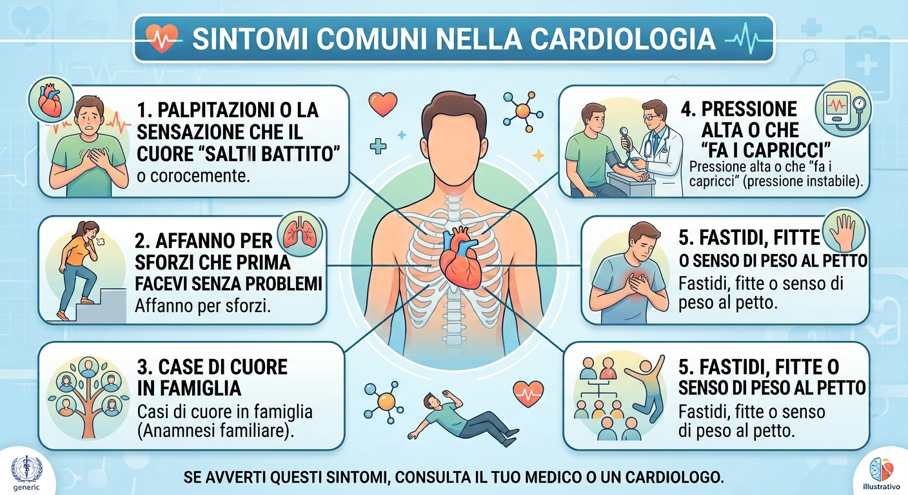

I sintomi più comuni

Palpitazioni o la sensazione che il cuore "salti un battito"
Sentire il cuore che improvvisamente accelera o batte in modo strano spaventa quasi tutti. Spesso dietro questi episodi ci sono solo periodi di forte stress, stanchezza, un po' di ansia o troppi caffè.
Con una visita e un elettrocardiogramma possiamo fare chiarezza: diamo un nome a quel fastidio per permetterti di tornare alle tue giornate senza il pensiero costante che ci sia qualcosa che non va.
Pressione alta o che "fa i capricci"
Misurare la pressione a casa e trovare valori sballati, o vederla oscillare senza un motivo apparente, crea molta apprensione. L'ipertensione è subdola perché spesso non dà alcun sintomo fisico, ma lavora in silenzio.
Valutiamo insieme se si tratta soltanto di modificare lo stile di vita o di iniziare una terapia farmacologica, senza trasformare la misurazione in un'ossessione quotidiana.
Affanno per sforzi che prima facevi senza problemi
Ti capita di avere il fiatone per una rampa di scale o una camminata un po' più veloce del solito? Il primo pensiero è quasi sempre: "È che sono fuori allenamento".
Spesso è vero, ma a volte è necessario fare qualche approfondimento in più per evitare di sottovalutare la situazione, così da darti il via libera per muoverti e fare attività in totale sicurezza.
Fastidi, fitte o senso di peso al petto
Un senso di oppressione o una fitta improvvisa al torace sono sintomi che non lasciano indifferenti. Spesso parliamo di un problema muscolare, di cattiva postura o di reflusso gastrico.
Se quella fitta al petto però non ci lascia sereni, il modo migliore per tranquillizzarsi è escludere una causa cardiologica con gli strumenti giusti.
Casi di cuore in famiglia (e la voglia di giocare d'anticipo)
Quando un genitore o un parente stretto ha avuto problemi cardiaci, superati i 40 anni è inevitabile farsi qualche domanda sulla propria salute. Avere una "familiarità" non significa avere il destino segnato: è semplicemente un prezioso campanello che ci invita a giocare d'anticipo.
Vediamoci per fare il punto sui tuoi fattori di rischio (colesterolo, fumo, stile di vita). La prevenzione non è fare esami a caso, ma costruire uno scudo su misura per proteggerti negli anni.